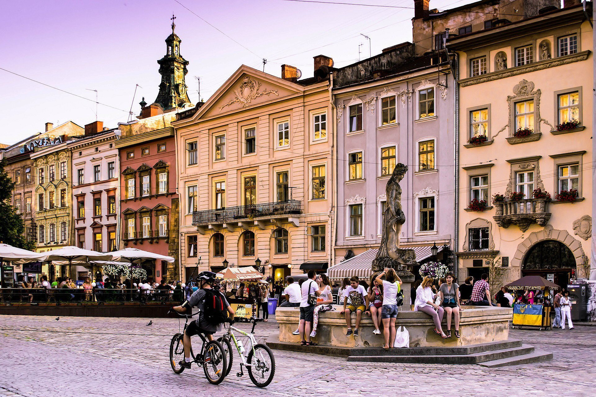
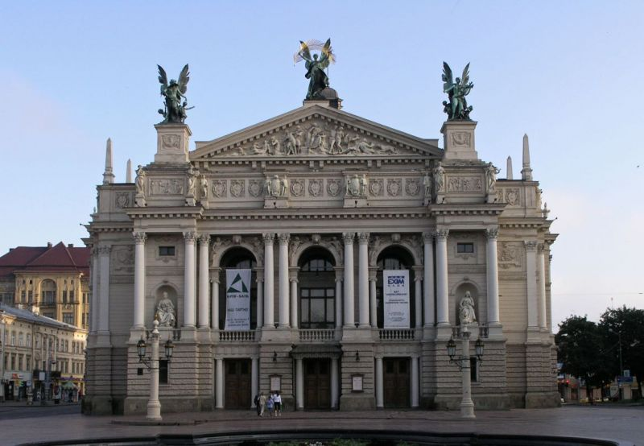
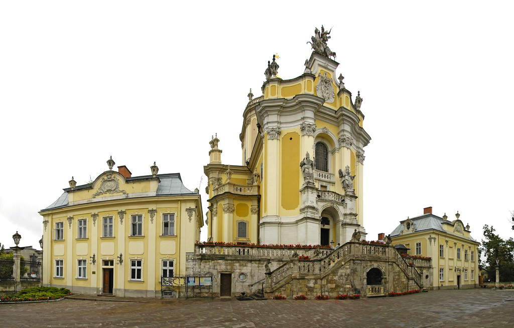

Площа Ринок
Площа Ринок була закладена в період правління князя Данила Романовича. Протягом багатьох років вона виконувала роль осередка торгівлі та громадського життя середньовічного населеного пункту. Над будівлями майдану працювали австрійські та італійські архітектори.
Оперний театр
Львівський національний академічний театр опери та балету імені Соломії Крушельницької будувався протягом 1897 – 1900-их років. Над його проектом свого часу працював архітектор Зігмунд Горголевський. Будівля зведена в стилях – ренесанс та бароко. Об'єкт вражає, як ззовні, так і всередині, багатим скульптурним декором. Над фігурами трудилися талановиті скульптори – П. Войтович, Ю. Марковський, А. Попель, Е. Печ, Т. Баронч. Для внутрішнього оформлення приміщення були використані мармур, позолота. Тут можна побачити декоративний живопис художників Т. Попеля, М. Герасимовича, Т. Рибковського, З. Розвадовського, С. Дембіцького, С. Рейхана, ліпні орнаменти.
Собор Святого Юра
На Святоюрській горі знаходиться головний греко-католицький собор міста Лева – Святого Юра. Храм входить до переліку об'єктів всесвітньої спадщини ЮНЕСКО, є яскравим зразком української пізньої барокової архітектури. Комплекс включає собор, дзвіницю, митрополичу палату, а також мури, сади, будинки капітулу, тераси зі сходами тощо. Будівництво греко-католицької катедри стартувало в 1744-ому році згідно проекту Бернарда Меретина. Після того, як архітектора не стало, зведенням святині займався Клеменс Ксаверій Фесінґер. Будівельні роботи були завершені в 1764-ому році.
